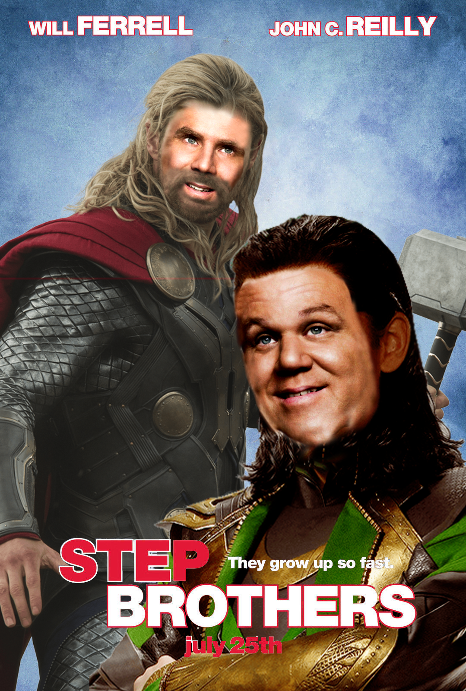

Final Portfolio
I feel like over the course of this class I have gotten a lot better at not just the individual elements of
HTML, Photoshop, and Audacity, but in terms of design itself. My personal preferences for design have not changed,
but I have gotten much better at achieving that preference myself. To be specific, I very much appreciate simplicity,
and in particular minimalism, in design, and I have learned a lot by incorporating those themes in this website, and
in creating logos, which I discuss more near the end of this page.
While the semester started with learning web design with HTML and CSS, I have been continuing to learn it throughout
the other assignments. For each new section, I had to learn more, from centering and containing images, to embedding
Google Slides that continue every 20 seconds, to even this final portfolio, where I had to learn about the audio tag
in order to present the Soundscape. My knowledge of HTML and CSS has slowly been building up over the course of all of
these assignments, and I have been updating previous pages as I learn more.
Photoshop was a great chance for me to learn, because as I have mentioned in the Work In Progress 2 page, I have tried
to learn Photoshop in the past, and this class helped me focus directly on what I needed to learn, so that I was not
overwhelmed by the sheer amount of options. Now that I have the basics down, and an understanding of certain in-depth
elements, I can continue to learn more on my own.
Audacity was also an interesting experience int his class, and not just because of the switch to online classes at
that point in the semester. All of my experience with audio editing was interconnected with video in some way, and
Adobe Premeire was mentioned in place of Audacity, so it was not what I originally expected. Even with this ending up
outside of my expections, I learned a lot about audio mixing, which even helped me when I did end up using Premeire for
another class. The best part, personally, is that due to the resources provided for free online audio files to work with,
I will be able to continue learning on my own later, outside of classwork, just like working with HTML and Photoshop.
I chose many of the ideas I did for assignments in this class based on who I believed would be seeing them. From the first
assignment of the class, the Embedded Fiction, to the final assignment, this very page. That fiction writing work was
based off of a Legend of Zelda joke, as at the time I had assumed the only person who would be reading it would be me,
as I am sure I would get the joke. Once we began creating the website, and from then on, I started treating my works
as more professional, as I knew that it would be seen by the professor who gave us the assignments in the first place.
To make sure all of my ideas were easily understood, I attempted to make my works' themes more understandable. For instance,
I made my parody of the corset ad in Photoshop very obvious, even though I prefer more subtle parody personally. I
also made sure my logos were for something that we would have in common, and so I chose the University of Pittsburgh.
The only exception from then on was the Pecha Kucha Presentation, which I wanted to be a little bit more personal, as
the rest of the class would also be seeing the presentaion in class. I feel much more comfortable presenting something
somewhat personal, and also in the worst case I would be there to explain it.
I have considered the most important part of writing in this class was to be specific. I need to understand exactly not just what
I was doing, but specifically why I was doing it. I had to study my own work as if I was not the one who made it,
that way I could properly explain it to someone who isn't already in my head. I found this personally difficult when explaining
my choice of "simplicity" for this website. The whole point was that there wasn't much to it, but there was still thought that
went into it, and decisions that were made. Everything I did was on purpose, and I had to really think about the reasons I
made the choices I did. I will certainly take this idea into account when writing in the future, as I think it really enriched my
writing, helping me be more specific about my ideas and reasons.
Above is the latest and final project in this Composing Digital Media class. Our finale was working with audio, specifically using the program Audacity. After a series of tutorials, we were assigned the task to create a "Soundscape", which is an audio file that puts you in the "world" that you are listening to. It is a series of sounds that are meant to feel like they are taken straight from the location, whether it be real or fictional. As I have been sent back home due to the coronavirus outbreak, I've been spending a lot of time looking at the woods outside my window, as there isn't much else to do, and I've been hearing the familiar sounds of spring birds and even owls. So, I've decided to share some of these sounds with you. I tried to find familiar sounding birds and owl calls, but I am not an expert so I don't think they are the exact same ones that I hear.

For the introduction to Photoshop assignment, we were given a set of old advertisements, and told to edit them to create some kind of parody or some other effect. As you could see on the page dedicated to this assignment, I created two images, one of which was a parody, and the other was the one you see above. For this image, I wanted to take this obviuosly quite old advertisement for corsets, and attempt to modernize it. As this was early in my experience of Photoshop (as well as the fact that I am red-green colorblind) I did not try to color it, although if I had to actually present a fully modernized version that is what I would do first.
For an instance of visual choices I have made throughout this class, I am going to try something more unique. Instead of using an example of a Photoshop assignment, using a completely visual medium, I am going to point out the very text you are reading. The font used on these pages was chosen to fulfill a very specific purpose. As stated in several earlier assignments, I wanted this website to feel mostly professional, but with a personal touch. This font is a standard type of font, but it is slightly "softer". and easier to look at. Personally, my favorite font is Ubuntu, but especially considering this isn't a website focused on tech or coding, I felt it wasn't the right choice. This font, however, is close enough to remind me of that font while still fitting my thematic ideas.

This image was created in a group assignment, in which we were assigned to change one movie's poster into another movie's genre. As explained in this assignment's page, we were randomly assigned the genre of Comedy, and our group decided to use the poster of the 2008 movie Stepbrothers. We were then assigned the genre of Superhero movies, and one of our members had the idea of making the stepbrothers be Loki and Thor, from the incredibly large movie franchise from Marvel Comics. To keep things organized, three of us gave all of our ideas, suggestions or tips, and the image was kept on one computer. I suggested a lot of ideas to this project, and while I did not personally edit the image, I both knew a lot of what my group member did, and learned a lot by watching his progress.
Creating these storyboards was kind of frustrating to me at first, not because of putting together and editing the images, but because of the template I used to start. For this assignment, we were given an opportunity to begin with a storyboard template, and fill in our work. Having not worked with someone else's photoshop files before, it was a bit of an issue to figure out everything. The templates were of course made to be edited, and so the layers were all organized in a certain way, and there were even some layers that were invisible, and optional to use. This is a great way to create a template, but it started to become pretty annoying to figure out where my new layers should go, and particularly how to edit the text.
This final sample of my work is something that I am definitely quite proud of. This is at the end of this Composing Digital Media class' work with Photoshop, and I believe it is among my best in terms of not just Photoshop, but image editing in general, especially given the limitations of Microsoft Paint. I feel like this is such a good display of my work because even though it isn't perfect, it is something that I feel at least resembles professional work. I see a lot of modern logos being quite minimalist, such as Facebook's simple "f" and Twitter's single blue bird. I am also quite fond of the Cathedral of Learning, and often think about it as the best symbol of Pitt. So, with those aspects combined, I feel like this logo in particular is some of my best work.